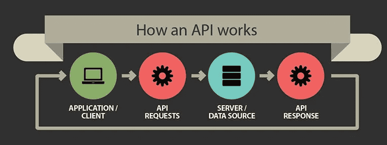
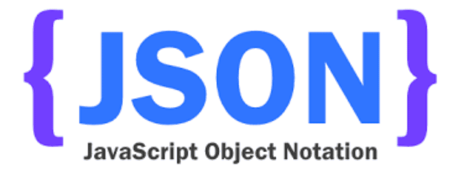
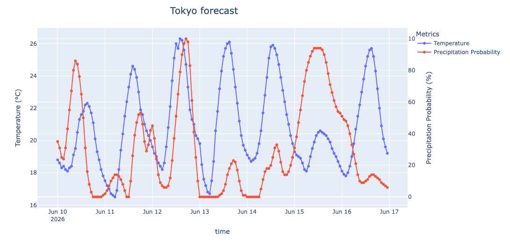

Introduction to API querying
Wednesday, June 10th, 9:00am–noon Eastern Time
Disclaimer: These notes were adapted from the 2025 DHSI notes by Tannia Chevez.
Learning Objectives
- Understand what an API is and why they are useful in Humanities & Social Sciences research
- Differentiate between (1) text mining, (2) web scraping, and (3) API querying
- Assess if a website has an API and where to find it
- Practice how to make a request to an API
- Execute query parameters and endpoints to further specify which kind of data you are interested in
- Interpret status codes and responses from APIs
- Apply JSON format to parse data
What is an API?
API stands for application programming interface. It acts as a communication interface so different computers/systems can talk to the application or backend server hosting the API. Essentially, it is a set of rules that allow programs to talk to each other: the developer creates the API on the server that allows a client to talk to it.

Why are APIs useful?
Python APIs are useful because they allow Python programs to communicate with external services, applications, and databases in a simple and standardized way. They make it possible to:
- access frequently updated data in real time, e.g. weather or traffic data,
- retrieve only the specific information you need from a large dataset,
- access a vast ecosystem of online services without having to build everything from scratch, and
- automate workflows, e.g. by offloading repeated computations or complex processing to a remote server, or putting multiple server calls into a Python script that you run once.
Difference between text mining, web scraping, and APIs
Text mining is the process of transforming raw, unstructured text into structured data to uncover meaningful insights and patterns. With text mining, you typically start with some basic text-processing techniques such as tokenization (breaking down sentences into individual words or tokens), lowercasing (converting all text to lowercase), stop-word removal (filtering out common words that carry little semantic meaning, e.g. “the,” “is,” “at”), and stemming and lemmatization (reducing words to their root form). Once you have nicely formatted text, you would apply algorithms from a variety of fields, such as Natural Language Processing (NLP), Sentiment Analysis, Clustering, etc – all of which fall under the broader umbrella of text mining and analysis.
Web scraping refers to the process of automatically extracting textual data from web pages and other digital files.
APIs provide data in a digital format that computers can understand and use – often referred to as machine-readable data.
Key concepts of API
- Endpoint is the URL where the API can be accessed.
- Request is the action of querying the API.
- Response is the data returned by the API.
- HTTP Methods: common methods include GET (retrieve data), POST (send data), PUT (update data), and DELETE (remove data).
- Authentication: many APIs require a key or token to authenticate requests
Three main types of web APIs
- SOAP (Simple Object Access Protocol) is typically associated with the enterprise world, has a highly formalized protocol with strict rules defined by a WSDL (Web Services Description Language) file. You can find this API type in financial & payment systems, global logistics and shipping carrier networks, and various government and public sector services – most legacy infrastructure and/or a heavily regulated institutions.
- REST (Representational State Transfer) is typically used for public APIs and is ideal for fetching data from the web. It’s much lighter and closer to the HTTP specification than SOAP. Different queries use different endpoints.
- GraphQL (Graph Query Language) is a newish (2012), flexible API query language from Facebook that allows the user to talk to a single endpoint with a query specifying exactly what fields he/she needs. Meta, LinkedIn, Netflix, Airbnb, and (surprisingly) GitHub rely heavily on GraphQL.
Six steps to querying APIs
1. Read the API documentation
Pay attention to the key sections in the API documentation:
- Overview: General information about the API and its purpose.
- Endpoints: The specific URLs where API requests can be made.
- Methods: The HTTP methods (GET, POST, PUT, DELETE) used to interact with the API.
- Parameters: Required and optional parameters for API requests.
- Authentication: How to authenticate requests, typically using API keys or tokens.
- Error Codes: Information on potential errors and their meanings.
An example: https://docs.github.com | Developers | REST API and GraphQL API
2. Set up your environment
To interact with an API, you’ll need a tool or environment for making HTTP requests. Some popular options include:
- Postman: a powerful GUI tool for testing and developing APIs (commercial).
- cURL: an open-source command-line tool for making HTTP requests.
- HTTP libraries in programming languages: libraries like
requestsin Python, which we will be using today.
3. Authentication
Most APIs require authentication to ensure that only authorized users can access the data or services. Common authentication methods include:
- API key: a unique key provided by the API service, included in the request header or URL.
- OAuth (Open Authorization): a more secure method that involves token-based authentication.
- Basic authorization: encodes the username and password in the request header.
In our first two examples today, we will use sites that don’t require API keys or authentication. In the third example, you will need to create an API key.
4. Send a request and receive a response
When you call (or query) an API you are making a request. When an API receives a request, it returns a response, assuming the service is live and functioning properly.
- Requests contain relevant data regarding your API request call, such as the base URL, the endpoint, the method used, the headers, and so on.
- Responses contain relevant data returned by the server, including the data or content, the status code, and the headers.
The API usually returns this data in JavaScript Object Notation (JSON) format.

5. Error handling: status codes
Web servers return status codes every time they receive an API request. A status code reports what happened with a request. Here are some codes that are relevant to GET requests:
- 200 - Everything went okay, and the server returned a result (if any).
- 301 - The server is redirecting you to a different endpoint. This can happen when a company switches domain names, or when an endpoint’s name has changed.
- 401 - The server thinks you’re not authenticated. This happens when you don’t send the right credentials to access an API.
- 400 - The server thinks you made a bad request. This can happen when you don’t send the information that the API requires to process your request (among other things).
- 403 - The resource you’re trying to access is forbidden, and you don’t have the right permissions to see it.
- 404 - The server didn’t find the resource you tried to access.
6. Advanced API requests
After mastering the basics, you can explore more advanced API features such as:
- Pagination: handling large datasets by retrieving data in chunks.
- Filtering and sorting: requesting specific subsets of data.
- Rate limiting: managing API usage to avoid hitting limits.
Let’s get started in JupyterLab!
conda activate yourEnvName
jupyter labimport requests # need this to interact with the API
import json # need this to help with formatting the responseLet’s explore the requests and json libraries using help() function:
help(requests)
help(json)1st example: Star Wars API
The Star Wars API site was created by Paul Hallett in 2014 to give developers and students an easy, fun way to practice working with web APIs using familiar data from the Star Wars universe. Over time, SWAPI became one of the best-known “toy APIs” used to teach concepts like:
- fetching data from APIs,
- pagination,
- relational data,
- asynchronous programming,
- API testing.
First, let’s take a look at the API documentation https://swapi.info/documentation.
The root/base URL https://swapi.info/api is the root URL for all of the API. If you ever make a request to SWAPI and get a 404 NOT FOUND response, check the Base URL first. All examples below assume you are prepending this Base URL to the endpoints to make requests.
There are several endpoints you can use to search specific resources:
/filmsis the URL root for Film resources/peopleis the URL root for People resources/planetsis the URL root for Planet resources/speciesis the URL root for Species resources/starshipsis the URL root for Starships resources/vehiclesis the URL root for Vehicles resources
We will work with the /people endpoint today. Let’s create a variable for this endpoint URL and do a simple request to it:
people_url = "https://swapi.info/api/people"
all_people_api = requests.get(people_url) # create a variable for the people_url request
all_people_api.json() # print in JSON formatHere .json() function returns a list:
p = all_people_api.json()
type(p) # <class 'list'>
len(p) # 82 records
type(p[0]) # dictionary
p[0] # show the first recordEach element in this list is a dictionary containing a number of attributes for each Stars Wars character: name, height, mass, hair_color, and so on:
p[0].keys()JSON data is formatted in key-value pairs. If you refer to the JSON data (below), you’ll see that it’s actually a list of keys and their corresponding values. For example, there is a birth_year key whose value is 19BBY, as well as an eye_color key whose value is blue.
We can refer to the JSON data by its key. Below is the full list of keys that we can refer to.
namestring = The name of this person.birth_yearstring = The birth year of the person, using the in-universe standard of BBY or ABY - Before the Battle of Yavin or After the Battle of Yavin. The Battle of Yavin is a battle that occurs at the end of Star Wars episode IV: A New Hope.eye_colorstring = The eye color of this person. Will be “unknown” if not known or “n/a” if the person does not have an eye.genderstring = The gender of this person. Either “Male”, “Female” or “unknown”, or “n/a” if the person does not have a gender.hair_colorstring = The hair color of this person. Will be “unknown” if not known or “n/a” if the person does not have hair.heightstring = The height of the person in centimeters.massstring = The mass of the person in kilograms.skin_colorstring = The skin color of this person.homeworldstring = The URL of a planet resource, a planet that this person was born on orfilmsarray = An array of film resource URLs that this person has been in.speciesarray = An array of species resource URLs that this person belongs to.starshipsarray = An array of starship resource URLs that this person has piloted.vehiclesarray = An array of vehicle resource URLs that this person has piloted.urlstring = the hypermedia URL of this resource.createdstring = the ISO 8601 date format of the time that this resource was created.editedstring = the ISO 8601 date format of the time that this resource was edited.
Now, if you continue to add to the endpoint, you can get a specific Stars Wars character’s record:
/people/<id>will return a specific person’s record- unlike in Python data structures, here numbering starts with 1
len(requests.get(people_url).json()) # all 82 Star Wars characters
requests.get(people_url+"/1").json() # first personWe can put it all into variables:
first_person = "https://swapi.info/api/people/1"
first_person_response = requests.get(first_person)
first_person_response.json()
hair = first_person_response.json()['hair_color'] # value of the `hair_color` key
name = first_person_response.json()['name'] # value of the `name` key
print(name+"'s hair is", hair)Can you write some code that uses the API to tell us Luke Skywalker’s eye color?
Let’s try a different endpoint! Choose one from the documentation and extract a full JSON object. Which attribute(s) do you see for this endpoint?
2nd example: Open-Meteo
The Open-Meteo project was built to provide a free, open-source, production-grade weather API based on publicly available, high-resolution hourly meteorological data from national weather services, without requiring an API key for basic or educational use.
- documentation https://open-meteo.com/en/docs
- non-commercial use up to 10,000 daily API calls is free
- attribution is required under the CC BY 4.0 data licence
Unlike the Star Wars toy API example, Open-Meteo serves real-world data as nested JSON structures, with coordinates (latitude/longitude parameters) and large arrays of numerical data. It is a perfect dataset to feed directly into a Python library like Pandas, NumPy, or Plotly for timeseries analysis, plotting temperature trends, or creating interactive wind/rain dashboards.
You can interact with Open-Meteo using standard HTTP requests and Python’s popular requests or urllib libraries. In addition, the team behind Open-Meteo also created a custom openmeteo-requests library as their official SDK uses the Open-Meteo Compact (OMC) binary format with FlatBuffers (open-source serialization library from Google) instead of JSON, resulting in a much more efficient data stream. This becomes beneficial if you are trying to download a large historical dataset, e.g. 40 years of hourly data over multiple locations.
However, we will start with a more basic Python workflow: requests \(\rightarrow\) pandas \(\rightarrow\) plotly.
import requests
url = "https://api.open-meteo.com/v1/forecast" # API endpoint
params = {
"latitude": 35.6762, "longitude": 139.6503, # Tokyo
"current": ["temperature_2m", "relative_humidity_2m", "weather_code"], # 2m means 2 meters above the ground
"hourly": ["temperature_2m", "precipitation_probability"],
"timezone": "auto" # automatically detects timezone based on coordinates
}
response = requests.get(url, params=params)
print(response.status_code) # 200 means success
data = response.json()
current = data['current'] # current weather
print("Current time:", current['time'])
print("Current temperature:", current['temperature_2m'], "°C")
print("Current humidity:", current['relative_humidity_2m'], "%")
forecast = data['hourly'] # dictionary
forecast['time'] # forecast times for the next 168 hours
forecast['temperature_2m'] # forecast temperature for the next 168 hours
forecast['precipitation_probability'] # forecast precipitation for the next 168 hoursWrite a script to visualize the forecast (temperature + precipitation) for Montreal over the next 72 hours using Plotly plotting package. Here is some sample Plotly code to get you started:
import plotly.io as pio
pio.renderers.default = 'notebook'
import plotly.express as px
from numpy import linspace, sin
x = linspace(0.01,1,100)
y = sin(1/x)
fig = px.line(x=x, y=y, markers=True, title = "My chart title")
fig.show()- first, plot temperature and precipitation separately
- ultimately, you want to merge them into a single plot, each with its own vertical scale

urllib library
Use an LLM to translate this code from using requests to using Python’s built-in urllib library.
Finally, as a take-home exercise, you could try to install and use Open-Meteo’s own API library. The installation will go something like this:
pip install openmeteo-requests # not available as a conda package ⇨ use pip
python -c "import openmeteo_requests" # test the installationTry to run the same forecast request using Open-Meteo’s own API library. You can either use an LLM or read their documentation.
3rd example: Google Gemini
While Google provides an official google-genai SDK as an interface for developers to integrate Google’s generative models into their Python applications, you can use the standard requests library to interact with their REST API directly.
- free-tier access to cutting-edge LLMs via standard REST endpoints
- can easily build a custom AI assistant or text-processing tool in 10-20 lines of Python
- need to create an API key (details below)
- pass a JSON payload containing your prompt to the backend and retrieve the LLM’s response
How to get your own Gemini API key:
- log in to Google AI Studio using your standard Google account
- click on Get API key in the lower left menu
- click “Create API key”, name your key (I called mine “DHSI26 test key”), select project (I used “Default Gemini Project”), click “Create key”
- copy the key to your computer
import json
import requests
API_KEY = "..." # paste your own API key; the instructor will use his password manager
MODEL = "gemini-2.5-flash" # also 'gemini-2.5-pro'
url = f"https://generativelanguage.googleapis.com/v1beta/models/{MODEL}:generateContent?key={API_KEY}" # API endpoint
headers = {"Content-Type": "application/json"}
# create a JSON payload structure required by the Gemini API
payload = {
"contents": [
{"parts": [{"text": "Explain the concept of 'API' in one short paragraph."}]}
]
}
response = requests.post(url, headers=headers, data=json.dumps(payload)) # submit data to be processed
print(response.status_code) # 200 means success
# extract the text response from the complex JSON structure
data = response.json()['candidates'][0]['content']['parts'][0]['text']
print(data)As you can probably guess, by adding a text prompt and wrapping this mechanism in a Python loop, you can build a command-line interface to Google Gemini using your own Python code.
Write a command-line interface to Google Gemini using your own Python code. First, you need to see how to enter and process text in Python – ask an LLM.
More resources on API querying
- Python and APIs from https://realpython.com
- Introduction to APIs and web scraping in Python (free online course, but requires an account)
- Understanding and using REST APIs
- API workbook for querying NYT (GitHub repo)
Thursday workflows
It would be fantastic if you could chose a website that contains data useful for your research or that is of interest to you. If you don’t have any idea however, here is a list of sites that have well-built APIs: